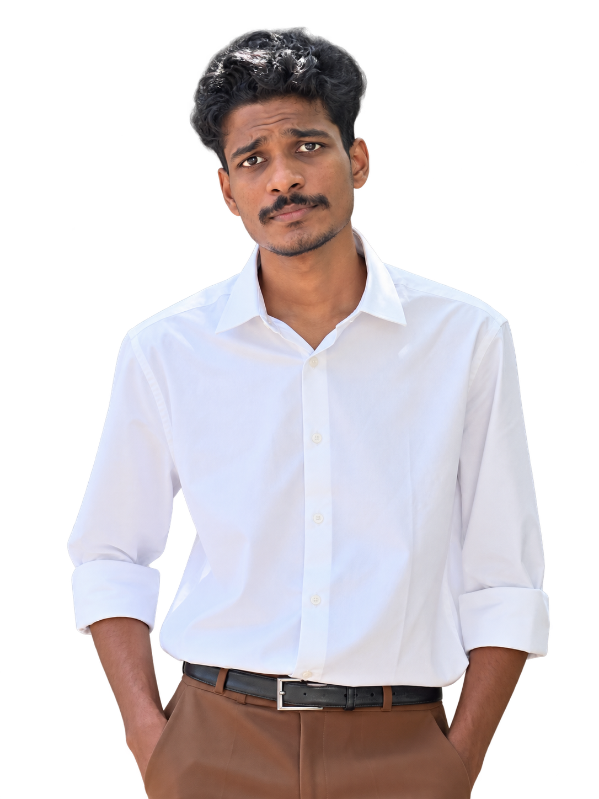

Data & intelligence
From raw information to useful signals, analysis and models.
DATA · INTELLIGENCE · MACHINES
I make software meet the physical world, through AI, data, robotics and the systems that bring them together.

Different disciplines.
One connected system.
My work lives where intelligence becomes useful: data becomes insight, models become applications, and code interacts with sensors, motors and the real world.
I'm a hands-on technology professional at Evolve Robotics, driven by curiosity, experimentation and the hard work of understanding how things actually work, not just how they look on paper.
My path started with a BCom and took a deliberate turn toward technology. Since then, I've been building my understanding through practical projects across AI/ML, robotics, embedded systems and software.
Explore the layers I work across. The interesting part is how they connect.
From raw information to useful signals, analysis and models.
Computer vision, model inference, LLM applications and workflows.
Perception, control, mapping and software-hardware integration.
Sensors, microcontrollers, communication and physical interfaces.
Python, C/C++, APIs and applications that connect components.
Exploring retrieval, orchestration and stateful agent workflows.
Command-line workflows, networking, debugging and automation.
Containers, deployment foundations, monitoring and reliable operations.
A selection of projects, prototypes and technical explorations. Open any project for the engineering context.
A hands-on effort exploring the integration of AI, robot control and autonomous navigation.
Working through laser scans, encoder feedback, IMU data and coordinate frames to understand robot motion and mapping.
A YOLO detection workflow connected to a microcontroller-triggered audible alert.
A Flask-based interface for exploring image classification and AI-assisted plant disease identification.
A built drone project for flower dropping and aerial surveillance.
Firmware and hardware experiments involving microcontrollers, sensors, motor drivers and serial/I²C communication.
Draw a route in a virtual environment and have a simulated robot follow the path.
Exploring local models, retrieval, tool integration and stateful orchestration patterns for AI applications.
My favorite engineering problems sit between components. This interactive model shows a simplified path from the physical world to a useful response.
ILLUSTRATIVE WORKFLOW · NOT A LIVE HARDWARE CONNECTION
STEP 01 / INPUT
Different environments, one consistent approach: learn deeply, work carefully and build useful things.
Hands-on work and exploration across intelligent systems, robotics and the software-hardware boundary.
A separate contract role applying a disciplined engineering mindset to systems and software operations.
Helping college students turn technical ideas into real, working projects.
Practical sessions that connect concepts with code, hardware and guided experimentation. Open to guest lectures, workshops and student project mentoring.
I completed a Bachelor of Commerce before moving toward technology. Programming, AI, robotics and electronics drew me in, and practical experimentation became the way I learned. I'm still building, testing and connecting ideas across disciplines.
Have a robotics, AI, data or engineering problem worth exploring? I'd be glad to connect.
PROJECT NOTES DESCRIBE THE SCOPE; THEY ARE NOT PERFORMANCE CLAIMS.